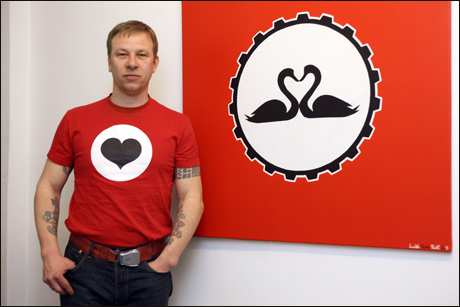

| |

Ludek Pesek Pachl, whose real name is Ludek Pachl, was born in 1971 in the
historic city of Most (which was largely destroyed by the Communist regime
in the 1970s) in Northern Bohemia. He lives the life of a punk. Since his
early years, Pachl had therefore been exposed to frequent harassment by
the former Communist regime. This is one of the main reasons, why he
leaves Czechoslovakia after the fall of the regime and travels through
Europe.
In 1989, Pachl graduated from Bratislava art school with Prof. Indigo
(which felt and predicted L.P.P.'s unprecedented artistic inclinations).
Shortly afterwards, Pachl is taking private lessons with Prof. Ikebara in
Prague - where he already starts off his own Rebel Art career. In winter
1989 he starts working part-time in a rock club called "Docela malé
divadlo" (Quite small theatre) in the city of Litvínov where he is
painting big eye catchers and posters for various cultural events and
begins to make a living out of his occasional painting.
1990: first longer trip to Naples - unfortunately ended for lack of
finances in Rome. Still working part-time at the rock club.
1991: Another several months of travelling through Western Europe
(Germany, Belgium, Netherlands, France, Spain). Still making a living of
his part-time job at the rock club and occasionally painting.
1992: Two weeks trip to the Naples area which is eventually extended to
three years. Occasional travelling through Europe - stays in Barcelona,
Lisbon, Bordeaux, Amsterdam, etc.
1995: First solo exhibition in Vtelno close to his home town of Most.
1995: Moved from Most to Teplice where he takes part in performances with
the theatre group "Vyzvejkla Bambule".
1997: Trip to Naples - stopped and returned after several failed border
crossing attempts.
1997: Offer to travel to Berlin for a couple of days (the trip lasted
until today). Yet he still travels, e.g. to the USA (Hawaii 2007), Czech
Republic, Latvia, Italy, Spain.
Since 2000, Pachl has regular exhibitions in Berlin, Prague and other
cities (for more see exhibitions)
Since 2006, he is regularly visiting Prague where he found a second home.
(photo by Robert Sedmik) |
|